ebola_linelist %>%
filter(
age > 25,
district == "Bolo"
)TBE - Linear regression (ENG)
Overview
| Case study characteristics | |
|---|---|
| Name: | TBE - linear regression |
| Language: | English |
| Tool: | R; DAGitty |
| Location: | Germany |
| Scale: | National |
| Diseases: | TBE |
| Keywords: | TBE; Linear Regression; R |
| Technical complexity: | Intermediate |
| Methodological complexity: | Intermediate |
Authorship
Original authors: Teresa Nygren (RKI), Alicia Barrasa Blanco (UK FETP), Jan Walter (RKI) and Achim Dörre (RKI)
Data source: Data is fictional and was inspired by Nygren et al. Tick-borne encephalitis: acute clinical manifestations and severity in 581 cases from Germany, 2018-2020. Journal of Infection. 2023 Apr 1;86(4):369-75
Adapted by: Liese Van Gompel (MediPIET), Joana Gomes Dias (ECDC), Chiara Entradi (ECDC) and Alberto Mateo Urdiales (ISS)
Instructions
Getting Help
There are several ways to get help:
- Look for the “hints” and solutions (see below)
- Post a question in Applied Epi Community with reference to this case study
Hints and Solutions
Here is what the “helpers” look like:
Click to read a hint
Here you will see a helpful hint!
Click to see the solution
Here is more explanation about why the solution works.
Posting a question in the Community Forum
… description here about posting in Community… TO BE COMPLETED BY APPLIED EPI
Terms of Use
Disclaimer: The information presented in this exercise and the associated data files have been deliberately changed so as to facilitate the acquisition of the learning objectives for fellows of EPIET, EUPHEM and EPIET-associated programmes. This case study was first introduced in 2022 (see Copyright and Licence agreement for more information).
You are free:
- to Share: to copy and distribute the work
- to Remix: to adapt and build upon the material
Under the following conditions:
Attribution: You must attribute the work in the manner specified by the author or licensor (but not in any way that suggests that they endorse you or your use of the work). The best way to do this is to keep as it is the list of contributors: sources, authors and reviewers.
Share Alike: If you alter, transform, or build upon this work, you may distribute the resulting work only under the same or similar license to this one. Your changes must be documented. Under that condition, you are allowed to add your name to the list of contributors.
Notification: If you use the work in the manner specified by the author or licensor, Walter@rki.de
You cannot sell this work alone but you can use it as part of a teaching.
With the understanding that:
Waiver: Any of the above conditions can be waived if you get permission from the copyright holder.
Public Domain: Where the work or any of its elements is in the public domain under applicable law, that status is in no way affected by the license.
Other Rights: In no way are any of the following rights affected by the license:
Your fair dealing or fair use rights, or other applicable copyright exceptions and limitations;
The author’s moral rights;
Rights other persons may have either in the work itself or in how the work is used, such as publicity or privacy rights.
Notice: For any reuse or distribution, you must make clear to others the license terms of this work by keeping together this work and the current license.
This licence is based on http://creativecommons.org/licenses/by-sa/3.0/
Feedback & suggestions
- You can write feedback and suggestions on this case study at the GitHub issues page
- Alternatively email us at: contact@appliedepi.org
Version and revisions
Write date of first version
Write any revisions made to the case study
| Date | Changes made | Author |
|---|---|---|
| 2023 | Revision R code | Liese Van Gompel (MediPIET) |
| 2024 | Revision R code | Joana Gomes Dias and Chiara Entradi (ECDC) |
| 2024 | Revision of content, structure, R code and adaptation of format to Applied Epi’s template of case studies | Alberto Mateo Urdiales (ISS) |
Guidance
Objectives of this case study
At the end of the case study, participants should be able to:
- Use directed acyclic graphs (DAG) to identify variables suitable to control for confounding;
- To perform linear regression in R;
- To write down the associated models and interpret them.
Previous level of expertise assumed
Participants are expected to be familiar with directed acyclic graphs (DAGs) and the use of DAGitty (a browser-based environment for creating DAGS) for the first part; and with data management as well as descriptive and stratified analysis in R for the second part.
Preparation for the case study
Include the steps needed to start replicating the analysis of the case study
For example:
Download folder named tbe_en and extract contents in the local laptop
Create an Rstudio project in the folder tbe_en. If you are unsure on how to do that, read the EpiRhandbook Chapter on R projects
Inside the folder “tbe_en”: Subfolder “data” contains a raw data file named tbe.RDS. This is the only data file you will use in this case study.
Subfolder scripts should be used to save any scripts related to the analysis. Inside “backup” you will find a solution script with the code of the case study named tbe_lr_backup.R. You will also find an image which corresponds to the proposed DAG solution.
Subfolder “outputs” could be used to store all outputs (tables, graphs, documents) that are the result of the analysis
You will also find inside “tbe_en” a word document called starter_guide_DAGitty.docx in case you need help using this website
Introduction to the case study
Tick-borne encephalitis (TBE) is a vaccine-preventable, tick-borne viral infection. The typical disease course is biphasic, consisting of a first phase with general symptoms such as headache and fever, a symptom-free interval, and a second phase with neurological manifestations. Severity ranges from mild symptoms over meningitis to severe meningoencephalitis or -myelitis. Overall, 70–95% of infections remain sub-clinical and <1% die. Age, monophasic course, central nervous system (CNS) comorbidities, and general comorbidities were found to be independently associated with severe TBE in some analysis. Results were inconsistent regarding diabetes, male sex and other factors. Further possible predictors include blood type, ticks’ blood meal duration (proxy: large tick at removal), immunosuppression, autoimmune diseases, and chronic inflammatory comorbidities. In Germany, laboratory diagnosis of acute TBE became statutorily notifiable in 2001. From 2018-2020, intensified surveillance was conducted. Primary aims were to assess clinical manifestations, health care utilisation, informal care, treatment practices, quality of life, and sick leave, as well as to identify factors associated with TBE severity
Note: This introduction has been adapted from Nygren et al. Tick-borne encephalitis: acute clinical manifestations and severity in 581 cases from Germany, 2018-2020. Journal of Infection. 2023 Apr 1;86(4):369-75
Overall goal
You are one of the epidemiologists in charge of the intensified surveillance system. Your boss asks you to test a hypothesis that high blood pressure may also be causal for severe TBE. As proxy for severe TBE, you will use the length of hospitalisation (number of days spent in hospital).
Goal 1: Draw a Directed Acyclic Graph (DAG)
Since you are interested in a causal question, please draw a DAG. If you want to use a computer, you may try http://www.dagitty.net/.
- Which variables would you need to adjust for?
If you are new to DAGitty you can find a few helpful information in the document called starter_guide_DAGitty.docx present in the “tbe_en” folder you have downloaded in your laptop (See Preparation for the case study).
Once you have drawn your DAG, click on the solution below to see the DAG we propose.
Click to see the solution
When planning the study, the epidemiologist considered this DAG:
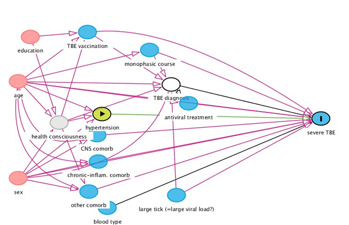
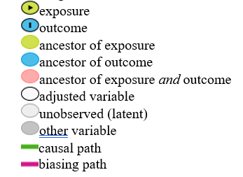
According to this DAG, if you want to explore the association between hypertension and severe TBE, you should adjust for:
TBE diagnosis
TBE vaccination
age
large tick (=large viral load)
monophasic course
other comorbidities
sex.
TBE Diagnosis is controlled by design (only cases are included).
Probably your DAG will look differently. This is absolutely fine, since there is not only one possible DAG. But you should be able to justify your DAG based on the existing evidence.
Goal 2: Perform linear regression in R
Now we will work on the data frame provided which includes data for 523 patients who have been hospitalized with TBE in the years 2018 to 2020 in Germany and for whom data were collected.
The following variables are provided:
Table 1: Data dictionary for the dataframe “tbe.RDS”:
| Variable | Description | Values |
|---|---|---|
| age | age in years | continuous |
| hyper | hypertension | 1= yes, 0=no |
| vac | vaccinated against TBE | 1= yes, 0=no |
| mono | monophasic disease course | 1= yes, 0=no |
| other | other comorbidities | 1= yes, 0=no |
| tick | large tick at removal | 1= yes, 0=no |
| sex | sex | 1= female, 0= male |
| hospd | length of hospitalisation in days | continuous |
Step 1: Set up
Step 1.1: Create a new R script
Once you have created an Rproject inside the “tbe_en” folder (as specified in the second point of the section Preparation for the case study). Create a new script with the name tbe_lr and save it in the subfolder “scripts”. If you are familiar with Rmarkdown, you may decide to use this type of file instead of a standard R script.
Step 1.2: Define R language
Depending on where you are and how you carried out R installation, your language “locale” might be different from the language of the graphs that you want to produce. For example, a french person might have a french “locale”. If that is the case, when creating a graph by day of the week, Monday will be displayed as “lundi”. If that french person wants to create an English report, as for this case study, the language “locale” should be changed.
Task: Ensure your “locale” is in English and change it into English if it is not. If you don’t know how to do this try finding it online (searching for online help is an important skill for R users!). Otherwise, see the solution below
Click to see a solution (try it yourself first!)
# To see your language locale
Sys.getlocale()
# To change it into English
Sys.setlocale("LC_ALL", "English")Step 1.3: Install/load packages
Install and load the following packages: rio, skimr, janitor, gtsummary, broom, rstatix, ggfortify and tidyverse.
You can find more about installing/loading packages in the Packages section of the EpiRhandbook.
Click to read a hint
You may end up using a long list of packages. Unfortunately different packages have functions with the same name. For example, the package {dplyr} (already installed with {tidyverse}) has a function called select() which we frequently use to subset columns of a data frame. But other packages such as {MASS} do also have a function called select(). This could create headaches if you want to subset columns using dplyr’s select() but R thinks you’re calling MASS’s select() (we call this masking - dplyr::select() is masked by MASS::select()). Given that you are more likely to use functions from {tidyverse}, ensure that this is the last package in your p_load() list so that functions from {tidyverse} (including {dplyr} functions) will always “prevail”.
Click to see a solution (try it yourself first!)
# Ensures the package "pacman" is installed
if (!require("pacman")) {
install.packages("pacman") }
# install (if necessary) from CRAN and load packages to be used
pacman::p_load(
rio, # importing data
skimr, # get overview of data
janitor, # data cleaning and tables
gtsummary, # summary statistics, tests and regressions
broom, # to generate tidy tibbles of regression analysis
rstatix, # for statistics, including statistical tests
ggfortify, # data visualisation for statistical analysis results
tidyverse # data management and visualization
)Step 2: Import and explore data
Step 2.1: Import the data and brief exploration
Import the data frame called “tbe.RDS” inside the “data” subfolder. If you are working within a project, finding the path to the dataframe should be relatively straightfoward. An “.RDS” file is an R object file. You can import this dataframe using the readRDS() function from {base}. However, we recommend that you use the import() function from {rio} because, as you may remember, this function will recognise the file type and import it whether the file is from R, Stata, excel or many others. If you have any doubts about importing review the Import and export chapter of the EpiRhandbook.
Then, explore the data trying to answer the following questions:
QUESTION: How many columns does the dataframe have?
QUESTION: How many rows have missing the column ‘Other comorbidities’?
QUESTION: How many cases have hypertension?
QUESTION: How many character columns does the dataframe have?
QUESTION: What is the difference between a column of class ‘character’ and a column of class ‘factor’?
Click to read a hint
An efficient way to explore data is to use the function skim() from the {skimr} package, as it gives you all the information needed with only one command. Of course, there are several alternatives.
Click to see a solution (try it yourself first!)
# Import the data
tbe <- import("data/tbe.RDS")# Explore the dataframe
skim(tbe)| Name | tbe |
| Number of rows | 523 |
| Number of columns | 8 |
| _______________________ | |
| Column type frequency: | |
| factor | 6 |
| numeric | 2 |
| ________________________ | |
| Group variables | None |
Variable type: factor
| skim_variable | n_missing | complete_rate | ordered | n_unique | top_counts |
|---|---|---|---|---|---|
| hyper | 0 | 1.00 | FALSE | 2 | no: 404, yes: 119 |
| vac | 0 | 1.00 | FALSE | 2 | no: 503, yes: 20 |
| mono | 0 | 1.00 | FALSE | 2 | no: 285, yes: 238 |
| other | 22 | 0.96 | FALSE | 2 | yes: 317, no: 184 |
| tick | 0 | 1.00 | FALSE | 2 | no: 345, yes: 178 |
| sex | 0 | 1.00 | FALSE | 2 | mal: 332, fem: 191 |
Variable type: numeric
| skim_variable | n_missing | complete_rate | mean | sd | p0 | p25 | p50 | p75 | p100 | hist |
|---|---|---|---|---|---|---|---|---|---|---|
| age | 18 | 0.97 | 47.30 | 18.97 | 1 | 34 | 47.0 | 61 | 90 | ▂▅▇▆▂ |
| hospd | 39 | 0.93 | 42.23 | 13.59 | 3 | 33 | 41.5 | 52 | 86 | ▁▆▇▃▁ |
Normally, at this point we would start cleaning our data. Fortunately for you, the tbe data has already been cleaned, so you can jump directly to the fun part. However, feel free to rename/recode or change any aspect of the dataframe to accomodate it to your personal preferences.
Step 2.2: Inspect factor columns
As we saw before, we have 6 factor columns representing categorical variables in our dataframe. Although we looked at them with the skim() function, explore them further with the tabyl() function from the {janitor} package.
Click to read a hint
To save time, try to always use functions that allow you to apply the same function to many different objects (e.g., multiple columns) simultaneously. You can achieve this using several approaches, such as loops, lapply or purrr. Here we give the solution with purrr, so if you want to explore further purrr have a look at the dedicated section in the EpiRhandbook.
Click to see a solution (try it yourself first!)
### One by one
tabyl(tbe, hyper)| hyper | n | percent |
|---|---|---|
| no | 404 | 0.7724665 |
| yes | 119 | 0.2275335 |
tabyl(tbe, vac)| vac | n | percent |
|---|---|---|
| no | 503 | 0.9617591 |
| yes | 20 | 0.0382409 |
#### All at once
tbe %>%
select(where(is.factor)) %>% #we first select only the columns that are of class 'factor'
map(.f = tabyl) #inside map() from {purrr} we specify the function we want to apply to the entire dataframe$hyper
.x[[i]] n percent
no 404 0.7724665
yes 119 0.2275335
$vac
.x[[i]] n percent
no 503 0.96175908
yes 20 0.03824092
$mono
.x[[i]] n percent
no 285 0.5449331
yes 238 0.4550669
$other
.x[[i]] n percent valid_percent
no 184 0.35181644 0.3672655
yes 317 0.60611855 0.6327345
<NA> 22 0.04206501 NA
$tick
.x[[i]] n percent
no 345 0.6596558
yes 178 0.3403442
$sex
.x[[i]] n percent
male 332 0.6347992
female 191 0.3652008Step 2.3: Histogram with length of hospitalisation
Our outcome variable will be length of hospitalisation in days (column hospd). It might be worth it looking at this column in more detail, as its characteristics may influence how will carry out the analysis later on. One important aspect is to check its distribution and ascertain, at least visually, if it follows a normal distribution.
Task Create an histogram with the distribution of hospd. Try adding the normal curve to this histogram.
QUESTION: Does lenght of hospitalisation look like normally distributed?
Click to read a hint
There are many ways to create an histogram in R, but try using the package {ggplot2}. You can have a look at the ggplot basics chapter of the EpiRhandbook if you struggle.
Adding the normal curve to the histogram may prove quite challenging. Do not worry if you don’t manage. One hint is that, in the histogram, you will need to display the density and not the frequency count. Try asking a search engine or any AI platform for help. Most of us use these tools on a daily basis to ask for help in R.
Click to see a solution (try it yourself first!)
tbe %>% #we call the data first and we pass it into ggplot with the pipe operator
ggplot(mapping = aes(x = hospd)) + #when drawing an histogram we only need to specify the x-axis
geom_histogram(aes(y = ..density..)) + #here we are telling ggplot2 to display the density and not the freq count
#the function below will add the normal curve.
stat_function(fun = dnorm, #In the fun = argument we are specifying that we want the normal curve
args = list(mean = mean(tbe$hospd, na.rm = T), #to draw a normal curve we need to give the mean and standard deviation of our column
sd = sd(tbe$hospd, na.rm = T)),
col = "darkblue", lwd = 1) # Identify the colour and line width of the normal curve
Now, that was tough! But we’re here to push you out of your comfort zone. Let’s go into more detail about what we have done.
By now, you should feel comfortable creating a basic histogram using ggplot, so let’s focus on the new things. We have added another aesthetic to the geom_histogram() in which we specify that we want the density plotted and not the frequency count. Why is that? Displaying the density is more appropriate when we want to focus on the shape of the data, as we can see the underlying probability distribution more clearly.
But, what is actually the density? The density represents the relative frequency, what we do is scale the y-axis so that the area under the histogram equals 1, normalising the histogram to represent probabilities (density) rather than raw counts. In fact, look at how the y-axis changes when you represent the density and when you represent the counts.
Finally, why are we putting two dots before and after density in the aes()? The double dots before and after ..density.. are a special syntax used within ggplot2. They indicate an internal variable that ggplot2 calculates during the plotting process. So, ggplot2 normally calculates the density for histograms, but it does not display it unless you specify it (with this syntax).
Step 2.4: Create a cross-table and calculate a statistical test
Let’s say that we now want to explore whether sex is associated with hypertension. To find this out, create a cross-table displaying these two variables and calculate the appropriate statistical test to know if there is a statistical association between them.
Click to read a hint
There are several ways in which you can do this. You could, for example, create the cross-table with tabyl() and then separately calculate the statistical test. The easiest way would be to use the tbl_summary() function from the {gtsummary} package, which allows you to do both, the cross tabulation and the statistical tests, in the same command. You should be familiar with this package by now, but if you need a little refresher have a look at the dedicated chapter of the EpiRhandbook.
Click to see a solution (try it yourself first!)
tbe %>%
select(hyper, sex) %>% #we select the columns we are interested in
tbl_summary(by = hyper) %>% #we specify that we want by hypertension status
add_p() # adding this command will calculate the most appropriate statistical test| Characteristic | no, N = 4041 | yes, N = 1191 | p-value2 |
|---|---|---|---|
| sex | 0.5 | ||
| male | 253 (63%) | 79 (66%) | |
| female | 151 (37%) | 40 (34%) | |
| 1 n (%) | |||
| 2 Pearson’s Chi-squared test | |||
As you can see, there isn’t a significant association between sex and hypertension.
Step 3: Check if there is a linear association between length of hospitalisation and age
Age is a potential confounder for a more severe course of TBE involving a longer stay in hospital, for which we would like to adjust. Since age is a continuous variable, we could include it in the regression model in various ways (e.g. as a continuous variable, in categories, by transforming it, etc.). In order to decide this, we need to analyze the association of age with the length of hospitalisation.
Step 3.1: Inspect a potential linear association
Please first have a look at the relationship between age and length of hospitalisation using a scatterplot.
Click to see a solution (try it yourself first!)
tbe %>%
ggplot(mapping = aes(x = age, # we put length of hospitalisation on the y-axis because this axis usually contains the dependent variable; and here we want to know if hospd depends on age
y = hospd)) +
geom_point() + # this geometry will create a scatterplot
scale_x_continuous(name = "Age" , limits = c(0,100)) + # Format the x-axis to a range between 0 and 100
scale_y_continuous(limits = c(0,70)) + # Format the y axis to a range between 0 and 70
labs(
x = "Age",
y = "Length of hospitalisation in days"
) +
theme_bw() # Add a pre-defined theme for formatting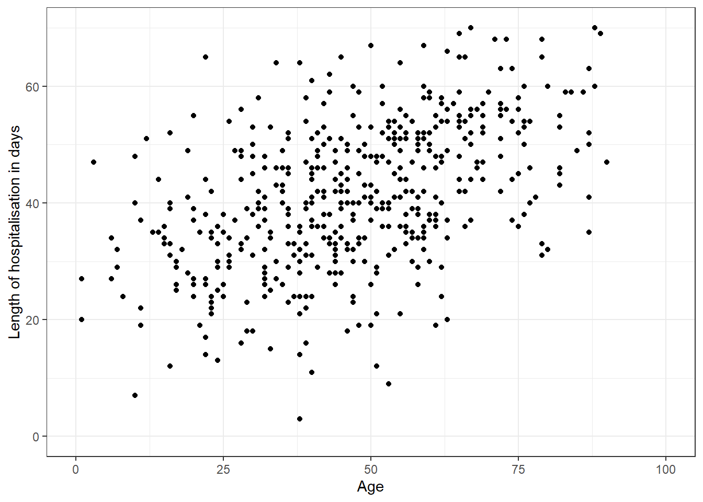
What do you think? Is there a linear association? How can you be sure? Add a linear model trend line to help you with the interpretation.
Click to read a hint
For the trend line, you can add a geom_smooth() geometry. Look up the documentation for geom_smooth (you can type ?geom_smooth() in the console and press “Enter”) and search for the methods option.For a linear trend line you can assign the methods argument to “lm” (linear model).
Click to see a solution (try it yourself first!)
tbe %>%
ggplot(mapping = aes(x = age, # we put length of hospitalisation on the y-axis because this axis usually contains the dependent variable; and here we want to know if hospd depends on age
y = hospd)) +
geom_point() + # this geometry will create a scatterplot
geom_smooth(method = lm) + # this geometry will add a trend line. "lm" is for "linear model"
scale_x_continuous(name = "Age" , limits = c(0,100)) + # Format the x-axis to a range between 0 and 100
scale_y_continuous(limits = c(0,70)) + # Format the y axis to a range between 0 and 70
labs(
x = "Age",
y = "Length of hospitalisation in days"
) +
theme_bw() # Add a pre-defined theme for formatting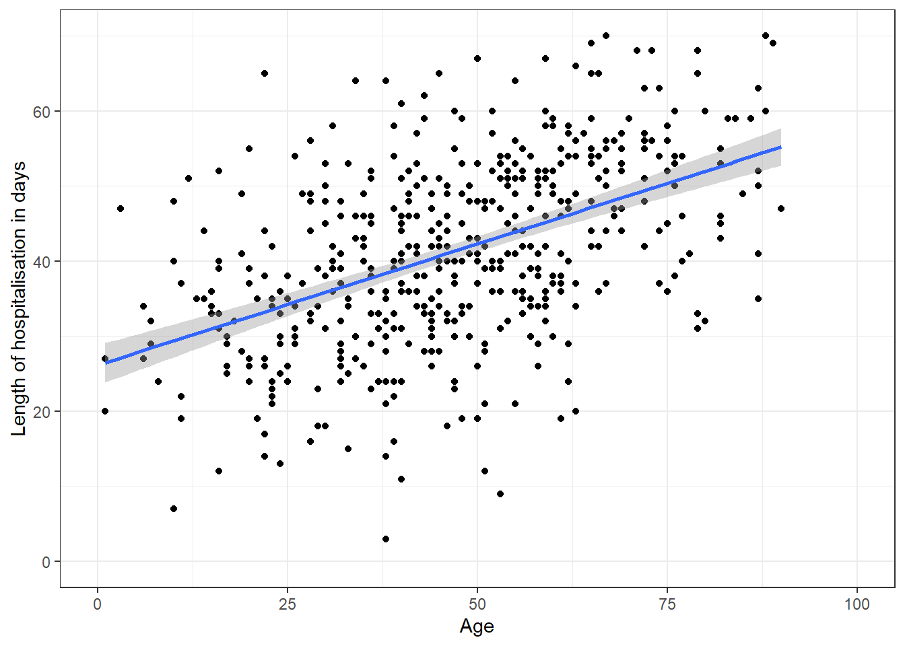
Now you have visual evidence of a linear association of age with the duration of hospitalisation. Therefore, it seems reasonable to include age as a continuous variable in the analysis.
Step 3.2: Check if the association between age and length of hospitalisation varies by sex
Now, check visually whether the association between age and hospd differs by sex
Click to read a hint
You may choose to create separate graphs adding a facet_grid() to your ggplot() (try looking up the syntax yourself). You may also decide to use colour coding to differentiate between factor levels of sex. For the latter, where do you think you should specify the colour, inside or outside the aes()? Read this section of the EpiRhandbook if you have doubts.
Click to see a solution (try it yourself first!)
# As separate graphs
tbe %>%
ggplot(mapping = aes(x = age, # we put length of hospitalisation on the y-axis because this axis usually contains the dependent variable; and here we want to know if hospd depends on age
y = hospd)) +
geom_point() + # this geometry will create a scatterplot
geom_smooth(method = lm) + # this geometry will add a trend line. "lm" is for "linear model"
facet_grid(~sex) + # adding this function will generate a separate graph for each category of sex
scale_x_continuous(name = "Age" , limits = c(0,100)) + # Format the x-axis to a range between 0 and 100
scale_y_continuous(limits = c(0,70)) + # Format the y axis to a range between 0 and 70
labs(
x = "Age",
y = "Length of hospitalisation in days"
) +
theme_bw() # Add a pre-defined theme for formatting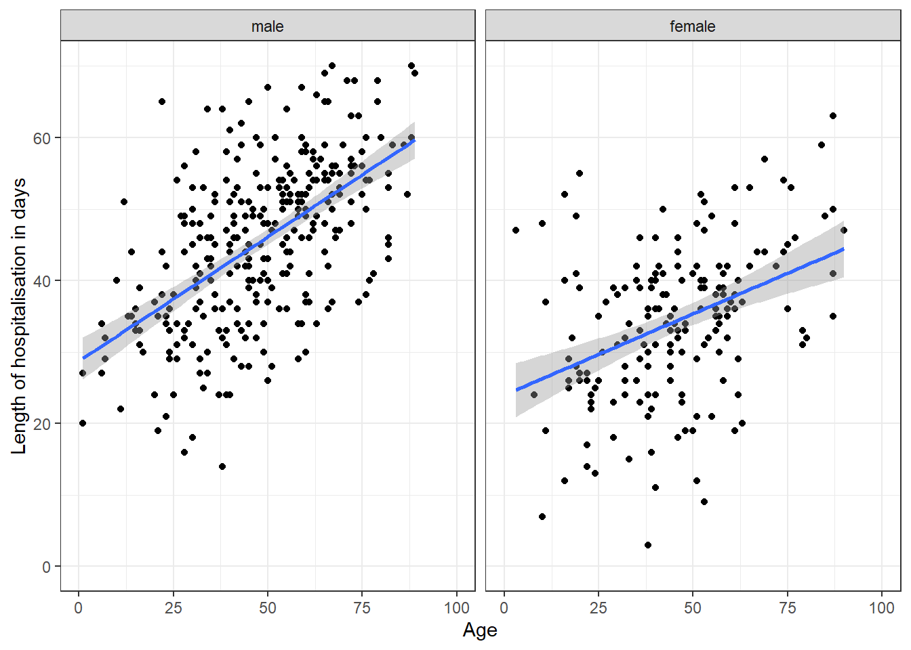
# Same graphs with different colours
tbe %>%
ggplot(mapping = aes(x = age, # we put length of hospitalisation on the y-axis because this axis usually contains the dependent variable; and here we want to know if hospd depends on age
y = hospd,
colour = sex )) + #we add the colour in the aes so that it varies according to the categories of sex
geom_point() + # this geometry will create a scatterplot
geom_smooth(method = lm) + # this geometry will add a trend line. "lm" is for "linear model"
scale_x_continuous(name = "Age" , limits = c(0,100)) + # Format the x-axis to a range between 0 and 100
scale_y_continuous(limits = c(0,70)) + # Format the y axis to a range between 0 and 70
labs(
x = "Age",
y = "Length of hospitalisation in days"
) +
theme_bw() # Add a pre-defined theme for formatting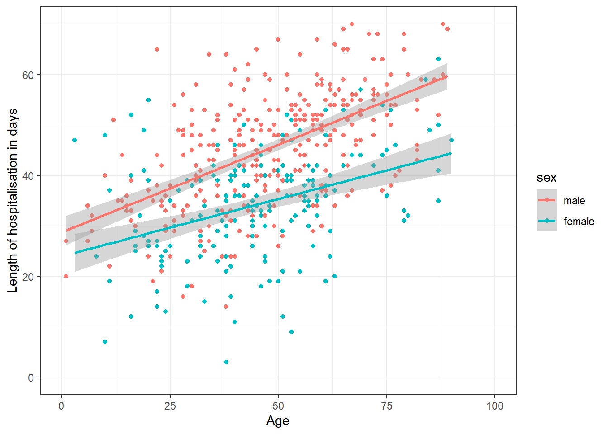
What do you observe? The lines for female and male patients have different slopes, indicating that the association between age and hospitalisation days is modified by sex.
Why does this matter? Since there are different effects of age on the length of the hospitalisation by sex, you may want to control for this.
Step 4: Check if there is a difference in length of hospitalisation by hypertension status
Let’s now focus on our exposure of interest (hypertension). We can check whether TBE cases with high blood pressure have a significant longer stay in hospital compared with those without high blood pressure either by carrying out a simple statistical test or through univariate regression. We will do both.
Step 4.1: Simple statistical test
One way would be to carry out a simple statistical test which enables us to ascertain if there is a significant difference between groups. As you know, the choice of statistical test will be determined by the number of groups that we have and the nature of the variables. If you don’t remember well how to choose the appropriate statistical test have a look at this BMJ article
QUESTION: What simple statistical tests do you think would be most appropriate in this case?
In this case we have independent data, two groups (hypertension yes/no) and a quantitative dependent outcome (length of hospitalisation), so we will choose either a t-test or Wilcoxon rank-sum test (also known as Mann-Whitney). We’d do a t-test if length of hospitalisation is normally distributed and Wilcoxon if it isn’t. We already checked in Step 2.3 that the distribution of hospd looked normal from the histogram, let’s now have a look if the distribution looks normal for both categories of hypertension: hypertension-yes and hypertension-no.
Task Check visually whether length of hospitalisation is normally distributed for both categories of hypertension.
Click to read a hint
A simple way to check this is by generating a histogram for hospd using ggplot(). Stratification by hyper is easily done by adding a facet_grid() to your ggplot, as we have already seen with the scatterplot. Looking at the frecuency distribution of “hospd” by “hypertension” can already give us an idea of whether the data is normally distributed or not.However, if we want to to add a normal curve, we’d need to plot the density and not the frequency, as you may rembember from the histogram we built above in Sep 2.3.
Click to see a solution (try it yourself first!)
# Plot the frecuency distribution by hypertension status
tbe %>%
ggplot(mapping = aes(x = hospd)) +
geom_histogram() +
facet_grid(~hyper) # add facet_grid() to get a graph for each hyper status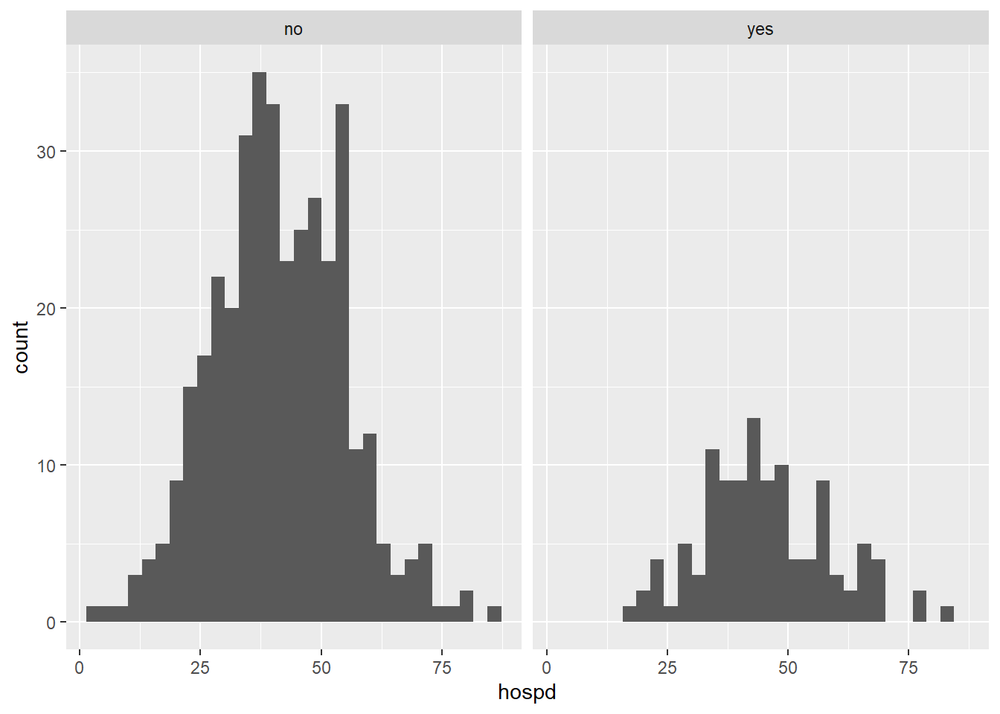
# Plot the density and add a normal curve
tbe %>%
ggplot(mapping = aes(x = hospd, fill = hyper)) + #remember that for bars, fill is is the interior colour
geom_histogram(aes(y = ..density..)) + #here we are telling ggplot2 to display the density and not the freq count
facet_grid(~hyper) + # add facet_grid() to get a graph for each hyper status
#the function below will add the normal curve.
stat_function(fun = dnorm, #The fun = argument we are specifying that we want the normal curve
args = list(mean = mean(tbe$hospd, na.rm = T), #to draw a normal curve we need to give the mean and standard deviation of our column
sd = sd(tbe$hospd, na.rm = T)),
col = "darkblue", lwd = 1) + # Identify the colour and line width of the normal curve
labs(
x = "Length of hospitalisation in days",
y = "Density"
)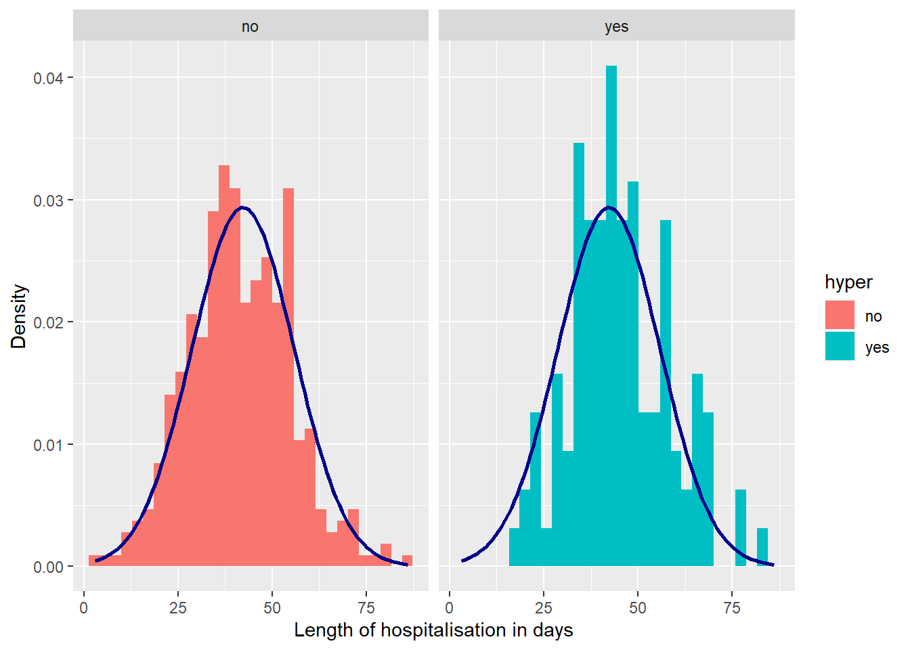
From the graphs looks like the data is normally distributed, but there is a test we can do to determine this: Shapiro-Wilk test.
Task: Use the Shapiro test to determine whether length of hospitalisation comes from a normally-distributed population.
Click to read a hint
You can choose {base} functions to carry out the Shapiro test (and any other statistical test) or functions from the {rstatix} package. Here we will use the latter, because {rstatix} has a syntax that is compatible with {dplyr}, which can be an advantage. In any case the name of the functions are very similar. For example, using {base} the Shapiro test function is shapiro.test(); and with {rstatix} the same function is written as: shapiro_test(). If you want to know more about how to carry out simple statistical tests in R, read the EpiRhandbook Chapter on Simple statistical tests
Click to see a solution (try it yourself first!)
tbe %>%
group_by(hyper) %>% #we first group by out independent or exposure variable
shapiro_test(hospd) # this function performs the Shapiro-Wilk test for all groups separately| hyper | variable | statistic | p |
|---|---|---|---|
| no | hospd | 0.9946512 | 0.2207864 |
| yes | hospd | 0.9870178 | 0.3632204 |
The null hypothesis of Shapiro’test is that data is normally distributed. As our results were non-significant (p>0.05) we cannot reject such null hypothesis. In other words, we can conclude that data is normally distributed.
Note: A statistician, or an epidemiologist pretending to be a statistician, would feel very uncomfortable by the conclusion written above. When we are unable to reject a null hypothesis we cannot conclude that this hypothesis (in this case that data is normally distributed) is true, but we should simply state that we were unable to reject it. However, in practical terms, by carrying out a Shapiro test we are assuming that the data is normally distributed….so word it as you like, but the consequences are the same.
QUESTION: Now that we know that the data is normally distributed, what test should we carry out?
Task Carry out the statistical test to ascertain if there are significant differences in length of hospitalisation according to hypertension status
Click to see a solution (try it yourself first!)
tbe %>%
t_test(hospd ~ hyper) # we write first our dependent variable and then the exposure one| .y. | group1 | group2 | n1 | n2 | statistic | df | p |
|---|---|---|---|---|---|---|---|
| hospd | no | yes | 373 | 111 | -2.706422 | 181.4443 | 0.00745 |
QUESTION: Is there a significant difference in the length of hospitalisation among patients with and without hypertension?
Note: In large datasets (as this one) the Shapiro-Wilk test may reject the normality hypothesis even though the deviation from the normal distribution is rather small. In this case you may still choose to calculate the t-test despite the violation of the normality assumption. This is acceptable because for large samples, the error imposed by t-test approximation is negligible.
Step 4.2: Univariate linear regression between hospd and hyper
The other way was through univariate regression. Carry out a univariate linear regression with length of hospitalisation (hospd) as the dependent variable and hypertension as the independent variable. Assign this model to an object named: hyper_hospd_lm. If this is the first time doing regression in R, have a look at the Univariate regression chapter of the EpiRhandbook.
Click to read a hint
As we are doing linear regression, we could use the lm() function from {base} to analyse the association between hypertension and length of hospitalisation. The syntax is: lm(outcome/dependent variable ~ exposure/independent variable, data = dataframe) You can print the model output in a subsequent command using the summary() function. However, the tidy() function from {broom} provides an overview which can be more easily compiled and used in down-stream analyses if needed.
The approach described above is the {base} R approach. You can also perform univariate regression analysis using the function tbl_uvregression() from the {gtsummary} package. If you want to explore this alternative approach further read the dedicated EpiRhandbook chapter
Click to see a solution (try it yourself first!)
#First we write the formula (lm stands for linear model) and assign the model to an object
hyper_hospd_lm <- lm(hospd ~ hyper, data= tbe)
# Prin the detailed output of the model
summary(hyper_hospd_lm)
Call:
lm(formula = hospd ~ hyper, data = tbe)
Residuals:
Min 1Q Median 3Q Max
-38.324 -9.324 -1.261 9.676 44.676
Coefficients:
Estimate Std. Error t value Pr(>|t|)
(Intercept) 41.3244 0.6991 59.113 < 2e-16 ***
hyperyes 3.9369 1.4598 2.697 0.00724 **
---
Signif. codes: 0 '***' 0.001 '**' 0.01 '*' 0.05 '.' 0.1 ' ' 1
Residual standard error: 13.5 on 482 degrees of freedom
(39 observations deleted due to missingness)
Multiple R-squared: 0.01487, Adjusted R-squared: 0.01282
F-statistic: 7.273 on 1 and 482 DF, p-value: 0.007243# Print the main model parameters
results_hyper_hospd_lm <- tidy(hyper_hospd_lm)
results_hyper_hospd_lm| term | estimate | std.error | statistic | p.value |
|---|---|---|---|---|
| (Intercept) | 41.324397 | 0.6990698 | 59.113403 | 0.0000000 |
| hyperyes | 3.936864 | 1.4597610 | 2.696924 | 0.0072434 |
QUESTION: Based on the results of this model, is there a significant association between hypertension and hospd?
QUESTION: How much does having hypertension increase length of hospitalisation (in days)?
QUESTION: What % of the variability in length of hospitalisation can be explained by hypertension?
In this case the regression equation is: \(hopsd(predicted)=41.3+3.9⋅hyper\).
Now let’s go through the outputs of the model. We will first review the outputs of the tidy() function. As explained before, the advantage of using tidy() is that we can save the output as an object for further manipulation. Also, tidy() keeps what we would normally need in epidemiology for the interpretation of the model:
We have four columns and two rows. The rows refer to the intercept (baseline value for hospd when there is NO hypertension: 41.3) and our only exposure/predictor (hypertension). In most cases, you will be interested in the row for hypertension (your predictor) and in the columns estimate and p.value. The estimate of hypertension tells us the estimated change in hospd when you go from NO hypertension to YES hypertension (that’s why it is written as hyperyes). In this case, it’s approximately 3.94, meaning that having hypertension is associated with an increase in 3.94 days of hospitalisation. The column p.value tells us whether this estimate is statistically significant.
This is most of what you need to know to be a functional epidemiologist. But if you want to know more, we will explain the rest of the elements of the output of both functions:
The column std.error provides an estimate of the variability or uncertainty associated with the estimate. In this case it means that the estimated effect of hypertension on hospitalisation duration (hospd) is expected to vary by about 1.46 days (on average) due to sampling variability. Finally, the statistic column gives us a value of the statistical test (t-test in this case) used to ascertain if the estimate is significantly different from 0 (normally you can ignore this column).
You may have noticed that the summary() output has more information than the tidy() output. Here we leave a brief explanation on what each part of the summary() output means:
Call: This line shows the formula used for the regression model.
Residuals: These are the differences between the actual hospd values and the predicted values from the regression model. The summary provides statistics like minimum, median, and maximum residuals.
Coefficients: This is the bit that interests us the most:
- Intercept: The estimated intercept (baseline value) for hospd when age is zero. In this case, it’s approximately 41.3.
- hyperyes: The estimated change in hospd when you go from NO hypertension to YES hypertension. Here, it’s approximately 3.9. The t-value and p-value indicate whether this coefficient is statistically significant.
Significance Codes: Indicate whether the p-value is highly significant (*** p < 0.001) or only marginally significant (* p<0.05)
Residual Standard Error: This measures the average deviation of the observed hospd values from the regression line. In this case, it’s approximately 13.5.
Multiple and Adjusted R-squared: These values (0.01487 and 0.01282) represent the proportion of variance in hospd explained by the linear relationship with hypertension. Higher values indicate better fit. The adjusted one is adjusted for the number of predictors. In this case we could say that around 1.3% of the variability in hospd is explained by hypertension.
F-statistic and p-value: The F-statistic tests whether the overall model (including all predictors) is significant. A low p-value (like this one, < 0.007243) indicates that the model is significant.
Step 5: Check if there is a linear association between length of hospitalisation and the rest of variables
We also need to know if there is a univariate association between our outcome (length of hospitalisation) and the confounders we may want to introduce in our model. We will do this in two steps, first with the continous variable and then with the factor variables.
Step 5.1: Univariate linear regression between length of hospitalisation and age
Try running a linear regression model with length of hospitalisation (hospd) as the dependent variable and age as the independent variable.
QUESTION: Based on the results of the model, is there a significant association between age and hospd?
QUESTION: How much does an additional year of age increase length of hospitalisation (in days)?
QUESTION: What % of the variability in length of hospitalisation can be explained by age?
Click to see a solution (try it yourself first!)
# Run the linear regression and assign the output to age_hospd_lm
age_hospd_lm <- lm(hospd ~ age, data = tbe)
# Print the results using the summary() function
summary(age_hospd_lm)
Call:
lm(formula = hospd ~ age, data = tbe)
Residuals:
Min 1Q Median 3Q Max
-35.676 -7.893 0.521 6.844 32.279
Coefficients:
Estimate Std. Error t value Pr(>|t|)
(Intercept) 24.5314 1.4233 17.24 <2e-16 ***
age 0.3722 0.0278 13.39 <2e-16 ***
---
Signif. codes: 0 '***' 0.001 '**' 0.01 '*' 0.05 '.' 0.1 ' ' 1
Residual standard error: 11.61 on 482 degrees of freedom
(39 observations deleted due to missingness)
Multiple R-squared: 0.2711, Adjusted R-squared: 0.2696
F-statistic: 179.2 on 1 and 482 DF, p-value: < 2.2e-16# Print the results of the regression analysis with the tidy() function
tidy(age_hospd_lm)| term | estimate | std.error | statistic | p.value |
|---|---|---|---|---|
| (Intercept) | 24.5314214 | 1.4232588 | 17.23609 | 0 |
| age | 0.3722366 | 0.0278031 | 13.38831 | 0 |
Step 5.2: Univariate linear regression between length of hospitalisation and factor variables
Now carry out a similar univariate model for each of the factor variables that we have not explored to ascertain which ones are significantly associated with length of hospitalisation.
QUESTION: What of the following variables have a significant linear association with length of hospitalisation?
Click to read a hint
We have seen already how to write a linear formula with lm(). You can then use either summary() from {base} or tidy() from {broom} to look at the coefficient and significance value. You could write these functions for each variable, but you could also try to use map() from {purrr} to do them all at once, as we did in the Step 2.2. Have a look at the Chapter on Purrr in the EpiRhandbook if you have any doubts.
Click to see a solution (try it yourself first!)
## Here we write one by one for each variable the formula and tidy
#sex
sex_hospd_lm <- lm(hospd ~ sex, data = tbe)
tidy(sex_hospd_lm)| term | estimate | std.error | statistic | p.value |
|---|---|---|---|---|
| (Intercept) | 46.66559 | 0.6932755 | 67.31176 | 0 |
| sexfemale | -12.41704 | 1.1595927 | -10.70810 | 0 |
#other comorbidities
other_hospd_lm <- lm(hospd ~ other, data = tbe)
tidy(other_hospd_lm)| term | estimate | std.error | statistic | p.value |
|---|---|---|---|---|
| (Intercept) | 39.590909 | 1.014237 | 39.035162 | 0.0000000 |
| otheryes | 4.142857 | 1.271413 | 3.258466 | 0.0011993 |
#vaccination
vac_hospd_lm <- lm(hospd ~ vac, data = tbe)
tidy(vac_hospd_lm)| term | estimate | std.error | statistic | p.value |
|---|---|---|---|---|
| (Intercept) | 42.556989 | 0.6262426 | 67.956072 | 0.0000000 |
| vacyes | -8.399095 | 3.1607381 | -2.657321 | 0.0081379 |
#monophasic course
mono_hospd_lm <- lm(hospd ~ mono, data = tbe)
tidy(mono_hospd_lm)| term | estimate | std.error | statistic | p.value |
|---|---|---|---|---|
| (Intercept) | 40.690566 | 0.8291071 | 49.077574 | 0.0000000 |
| monoyes | 3.396192 | 1.2325691 | 2.755377 | 0.0060844 |
#large tick at removal
tick_hospd_lm <- lm(hospd ~ tick, data = tbe)
tidy(tick_hospd_lm)| term | estimate | std.error | statistic | p.value |
|---|---|---|---|---|
| (Intercept) | 42.731250 | 0.7593945 | 56.270158 | 0.0000000 |
| tickyes | -1.487348 | 1.3045725 | -1.140103 | 0.2548094 |
## Here we do it with {purrr} all in one command
tbe %>%
select(-hyper, -age, -hospd) %>% # we first remove the columns we have explored before + the outcome column
map(.f = ~lm(hospd ~ .x, data = tbe)) %>% # here we carry out the model for each column. ".x" represents all the column
map(tidy) # finally we do tidy on each model$vac
# A tibble: 2 x 5
term estimate std.error statistic p.value
<chr> <dbl> <dbl> <dbl> <dbl>
1 (Intercept) 42.6 0.626 68.0 4.69e-249
2 .xyes -8.40 3.16 -2.66 8.14e- 3
$mono
# A tibble: 2 x 5
term estimate std.error statistic p.value
<chr> <dbl> <dbl> <dbl> <dbl>
1 (Intercept) 40.7 0.829 49.1 1.30e-189
2 .xyes 3.40 1.23 2.76 6.08e- 3
$other
# A tibble: 2 x 5
term estimate std.error statistic p.value
<chr> <dbl> <dbl> <dbl> <dbl>
1 (Intercept) 39.6 1.01 39.0 2.43e-151
2 .xyes 4.14 1.27 3.26 1.20e- 3
$tick
# A tibble: 2 x 5
term estimate std.error statistic p.value
<chr> <dbl> <dbl> <dbl> <dbl>
1 (Intercept) 42.7 0.759 56.3 5.50e-214
2 .xyes -1.49 1.30 -1.14 2.55e- 1
$sex
# A tibble: 2 x 5
term estimate std.error statistic p.value
<chr> <dbl> <dbl> <dbl> <dbl>
1 (Intercept) 46.7 0.693 67.3 2.99e-247
2 .xfemale -12.4 1.16 -10.7 3.79e- 24Statistically significant (\(p<0.05\)) univariable effects were observed for sex, other comorbidities, vaccination and monophasic disease course but not for large tick at removal. Women had on average 12.4 days shorter hospitalisation stay than men, other comorbidities increase the hospitalisation by 4.1 days, vaccination reduced it by 8.4 days, and monophasic disease course increased it by 3.4 days.
Step 6: Multivariable analysis
To control for possible confounding, we will adjust for the minimum adjustment set that we have identified through the DAG analysis (Goal 1), adding each variable in different steps.
Step 6.1: Add age as a covariate to the model
As a first step, add age to the model of the main effect.
Click to read a hint
We have already calculated and saved the model of our main effect (hyper_hospd_lm). You can add age to this model by creating a new model and adding the additional variable, so that the formula syntax is model <- lm(hospd ~ hyper + newVariable, data = data)
Click to see a solution (try it yourself first!)
# Creating a new model and adding age
hyper_hospd_adj_lm <- lm(hospd ~ hyper + age, data = tbe)
tidy(hyper_hospd_adj_lm) | term | estimate | std.error | statistic | p.value |
|---|---|---|---|---|
| (Intercept) | 23.6918245 | 1.437666 | 16.479366 | 0.0000000 |
| hyperyes | 3.8015966 | 1.245007 | 3.053473 | 0.0023875 |
| age | 0.3715581 | 0.027567 | 13.478364 | 0.0000000 |
Adjusting for age, we find that hypertension is associated with a 3.8 increase in the days of hospitalisations. This is only a slight change compared to the effect in the unadjusted model (where the coefficient was 3.9).
Step 6.2: Compare the performance of both models
We have the univariate model (hyper_hospd_lm), and now we have one adjusted by age (hyper_hospd_adj_lm). Compare both models calculating model performance metrics such as AIC and logLik.
Click to read a hint
One easy function to calculate performance metrics is glance() from the {broom} package. But, of course, there are many others. Choose the one you feel most comfortable with!
Click to see a solution (try it yourself first!)
glance(hyper_hospd_lm) # performance metrics of the univariate model| r.squared | adj.r.squared | sigma | statistic | p.value | df | logLik | AIC | BIC | deviance | df.residual | nobs |
|---|---|---|---|---|---|---|---|---|---|---|---|
| 0.0148657 | 0.0128219 | 13.50128 | 7.273399 | 0.0072434 | 1 | -1945.512 | 3897.024 | 3909.57 | 87861.17 | 482 | 484 |
glance(hyper_hospd_adj_lm) # performance metrics of the adjusted model| r.squared | adj.r.squared | sigma | statistic | p.value | df | logLik | AIC | BIC | deviance | df.residual | nobs |
|---|---|---|---|---|---|---|---|---|---|---|---|
| 0.2849348 | 0.2819616 | 11.51466 | 95.83297 | 0 | 2 | -1867.974 | 3743.948 | 3760.676 | 63774.52 | 481 | 484 |
The output of glance() gives us several performance metrics. If you want to focus on the important bits, you can look at the logLik and the AIC. A larger logLik means a better model; and a lower AIC means also a better model. So, if your logLik goes up and your AIC goes down, you are going in the right direction. The advantage of the logLik is that there is a formal test (Likelihood Ratio Test) to test if two logLiks are significantly different. However, AIC takes more things into consideration than the logLik, such as the complexity of the model (favours simpler models), so it is very useful to compare models with different numbers of parameters (like this case).
If you want to know more, let’s review each element of the output given by glance():
r.squared: This is a measure of how well the independent variables in your model explain the variability of the dependent variable. Think of it as a percentage that tells you how much of the changes in the outcome can be predicted by the model. So, in our example, hypertension alone explains 1.5% of the variability in length of hospitalisation, but when we add age, that model explains 28.5% of the variability in our dependent variable.
adj.r.squared: The adjusted R-squared value adjusts the R-squared value based on the number of predictors in the model. It is a more accurate measure when comparing models with different numbers of predictors (as in this case). Here, it is slightly lower at 28.2%, indicating a small adjustment for the number of predictors.
sigma: This represents the residual standard error, which is the standard deviation of the residuals.
statistic: This is the F-statistic value for the overall significance of the model. It tests whether at least one predictor variable has a non-zero coefficient.
p.value: The p-value associated with the F-statistic.
df: Degrees of freedom associated with the model which typically correspond to the number of predictors (1 in the first case and 2 in the second).
logLik: The log-likelihood of the model, which is a measure of the model fit. Higher values indicate a better fit. As stated above, one of the main performance measures that you will use as an epidemiologist.
AIC: Akaike Information Criterion, which is used for model comparison. Lower values indicate a better model.
BIC: Bayesian Information Criterion, similar to AIC but with a higher penalty for models with more parameters.
deviance: This is a measure of the goodness of fit of the model. Lower values indicate a better fit.
df.residual: The residual degrees of freedom, which is the number of observations minus the number of parameters estimated.
nobs: The number of observations used in the model, which is 484 in our case
(Optional) Step 6.3: Plotting effects of age by hypertension
If you remember, in Step 3.2 we checked visually for the association between age and length of hospitalisation by sex. Now, we will do something similar by plotting the estimated effect of age on length of hospitalisation by hypertension status. The final output that we want is a scatterplot displaying the raw data (length of hospitalisation by age), and then the fitted regression line by hypertension status.
Click to read a hint
In order to plot the estimated effects of age by hypertension we have to extract the fitted values of “hospd” from the model and add them to the dataframe. This only works if we have removed all rows that contain NAs in the hospd column before. we can then pass this new dataframe to a ggplot() with a geom_point() for the scatterplot and geom_line() for the fitted trend lines. Note: Previously, we used geom_smooth() to add trend lines to the scatterplot. Because we want to plot the predicted values of an existing model and not fit a linear model within ggplot(), we have to use geom_line() and use the predicted values of our model as input for y.
Click to see a solution (try it yourself first!)
# First add a variable with the fitted values to the dataframe
data_fitted <- tbe %>%
filter(!is.na(hospd)) %>% # Remove NAs
mutate(fit = predict(hyper_hospd_adj_lm)) # Create a new variable with the predicted values
### You can now open data_fitted to have a look at the new column
# Now we do the plot with the fitted lines
plot_fitted <- data_fitted %>%
ggplot(mapping = aes(x = age,
y = hospd,
colour = hyper)) +
geom_point() + # Adding a scatter plot
geom_line(aes(y = fit)) + # we add a line specifying that we want the fitted and not the observed values in the y-axis
labs(
title = "Effect of age on TBE hospital stay length for people\nwith and without hypertension ", # Title of the plot, note that "\n" breaks the title into the next line
x = "Age",
y = "Length of hospitalisation in days",
colour = "Hypertension"
) +
theme_bw() # we add a predefined theme
plot_fitted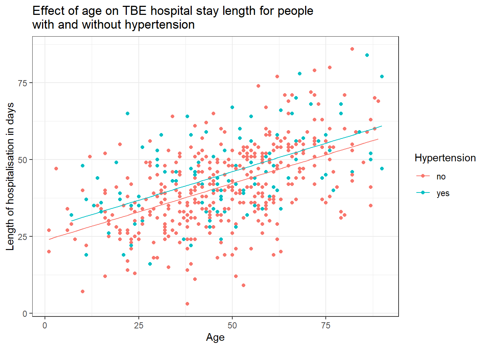
We did not allow the association between age and hospitalisation to vary by levels of hypertension. So we force them to be parallel by the way we specify the model. If we want the slopes to differ, we would need to allow for an interaction term. We’ll get to that later.
Step 6.4: Continue building the adjusted model and check quality of the model
Continue adding the rest of variables that we have to adjust for according to the DAG (TBE vaccination, age, large tick, monophasic course, other comorbidities and sex) to the model hyper_hospd_adj_lm one by one. Check, after you add each variable, model performance metrics to ensure that the model is improving.
Click to see a solution (try it yourself first!)
### We first add sex to the previous model
hyper_hospd_adj_lm <- lm(hospd ~ hyper + age + sex, data = tbe) # formula
tidy(hyper_hospd_adj_lm) # estimates| term | estimate | std.error | statistic | p.value |
|---|---|---|---|---|
| (Intercept) | 28.9661798 | 1.3613386 | 21.277718 | 0.000000 |
| hyperyes | 3.4659484 | 1.1079250 | 3.128324 | 0.001865 |
| age | 0.3452202 | 0.0246333 | 14.014368 | 0.000000 |
| sexfemale | -11.0377082 | 0.9762639 | -11.306071 | 0.000000 |
glance(hyper_hospd_adj_lm) # performance metrics| r.squared | adj.r.squared | sigma | statistic | p.value | df | logLik | AIC | BIC | deviance | df.residual | nobs |
|---|---|---|---|---|---|---|---|---|---|---|---|
| 0.4353144 | 0.4317851 | 10.24315 | 123.3435 | 0 | 3 | -1810.837 | 3631.674 | 3652.584 | 50362.62 | 480 | 484 |
### TBE vaccination
hyper_hospd_adj_lm <- lm(hospd ~ hyper + age + sex + vac, data = tbe) # formula
tidy(hyper_hospd_adj_lm) # estimates| term | estimate | std.error | statistic | p.value |
|---|---|---|---|---|
| (Intercept) | 29.0192105 | 1.3398585 | 21.658415 | 0.0000000 |
| hyperyes | 3.5401913 | 1.0905445 | 3.246260 | 0.0012512 |
| age | 0.3507362 | 0.0242813 | 14.444681 | 0.0000000 |
| sexfemale | -10.9105961 | 0.9613218 | -11.349577 | 0.0000000 |
| vacyes | -9.6218919 | 2.3644063 | -4.069475 | 0.0000551 |
glance(hyper_hospd_adj_lm) # performance metrics| r.squared | adj.r.squared | sigma | statistic | p.value | df | logLik | AIC | BIC | deviance | df.residual | nobs |
|---|---|---|---|---|---|---|---|---|---|---|---|
| 0.454185 | 0.4496271 | 10.08105 | 99.6467 | 0 | 4 | -1802.611 | 3617.223 | 3642.315 | 48679.6 | 479 | 484 |
### Monophasic disease course
hyper_hospd_adj_lm <- lm(hospd ~ hyper + age + sex + vac + mono, data = tbe) # formula
tidy(hyper_hospd_adj_lm) # estimates| term | estimate | std.error | statistic | p.value |
|---|---|---|---|---|
| (Intercept) | 27.9231475 | 1.3632885 | 20.482199 | 0.0000000 |
| hyperyes | 3.7307298 | 1.0799901 | 3.454411 | 0.0006006 |
| age | 0.3443505 | 0.0240868 | 14.296254 | 0.0000000 |
| sexfemale | -11.0608203 | 0.9517650 | -11.621378 | 0.0000000 |
| vacyes | -9.8262935 | 2.3391721 | -4.200757 | 0.0000317 |
| monoyes | 3.1330906 | 0.9155900 | 3.421936 | 0.0006751 |
glance(hyper_hospd_adj_lm) # performance metrics| r.squared | adj.r.squared | sigma | statistic | p.value | df | logLik | AIC | BIC | deviance | df.residual | nobs |
|---|---|---|---|---|---|---|---|---|---|---|---|
| 0.4672362 | 0.4616634 | 9.970207 | 83.84164 | 0 | 5 | -1796.755 | 3607.509 | 3636.784 | 47515.6 | 478 | 484 |
### Large tick at removal
hyper_hospd_adj_lm <- lm(hospd ~ hyper + age + sex + vac + mono + tick, data = tbe) # formula
tidy(hyper_hospd_adj_lm) # estimates| term | estimate | std.error | statistic | p.value |
|---|---|---|---|---|
| (Intercept) | 28.1079813 | 1.3968015 | 20.1231029 | 0.0000000 |
| hyperyes | 3.7655402 | 1.0821694 | 3.4796219 | 0.0005482 |
| age | 0.3446256 | 0.0241066 | 14.2959288 | 0.0000000 |
| sexfemale | -11.0239613 | 0.9542624 | -11.5523372 | 0.0000000 |
| vacyes | -9.7114161 | 2.3481138 | -4.1358371 | 0.0000418 |
| monoyes | 3.0852716 | 0.9194697 | 3.3554903 | 0.0008555 |
| tickyes | -0.5959864 | 0.9677751 | -0.6158315 | 0.5382995 |
glance(hyper_hospd_adj_lm) # performance metrics| r.squared | adj.r.squared | sigma | statistic | p.value | df | logLik | AIC | BIC | deviance | df.residual | nobs |
|---|---|---|---|---|---|---|---|---|---|---|---|
| 0.4676595 | 0.4609634 | 9.976687 | 69.8405 | 0 | 6 | -1796.562 | 3609.124 | 3642.581 | 47477.85 | 477 | 484 |
### Other comorbidities
hyper_hospd_adj_lm <- lm(hospd ~ hyper + age + sex + vac + mono + tick + other, data = tbe) # formula
tidy(hyper_hospd_adj_lm) # estimates| term | estimate | std.error | statistic | p.value |
|---|---|---|---|---|
| (Intercept) | 27.1251926 | 1.4596417 | 18.5834593 | 0.0000000 |
| hyperyes | 2.7139444 | 1.1769928 | 2.3058292 | 0.0215491 |
| age | 0.3406119 | 0.0240754 | 14.1477140 | 0.0000000 |
| sexfemale | -11.0797108 | 0.9506756 | -11.6545649 | 0.0000000 |
| vacyes | -9.2298015 | 2.3484899 | -3.9301005 | 0.0000975 |
| monoyes | 3.0995048 | 0.9157172 | 3.3847838 | 0.0007712 |
| tickyes | -0.7577796 | 0.9665465 | -0.7840074 | 0.4334257 |
| otheryes | 2.3008449 | 1.0351078 | 2.2228070 | 0.0266978 |
glance(hyper_hospd_adj_lm) # performance metrics| r.squared | adj.r.squared | sigma | statistic | p.value | df | logLik | AIC | BIC | deviance | df.residual | nobs |
|---|---|---|---|---|---|---|---|---|---|---|---|
| 0.4731284 | 0.4653803 | 9.935728 | 61.06371 | 0 | 7 | -1794.063 | 3606.126 | 3643.765 | 46990.1 | 476 | 484 |
As you can see, adding the rest of variables identified through the DAG improved the model, according to the metrics. The only exception was the addition of the variable “Large tick at removal”. However, the choice of covariates should be made conceptually through the DAG, and not based on whether there are small differences in AIC/logLik. If you concluded that this variable was a possible confounder, then keep it in the model.
Step 6.5: Adding an interaction term
We saw in Step 3.2 that the effect of age on length of hospitalisation is modified by sex. We knew this because the slopes were different for males and females. Given this information add now to the model an interaction term between sex and age.
Click to read a hint
An interaction can be written as a multiplication of two variables in your regression formula, e.g. age*sex. There is no need to keep both variables individually in the formula AND in the interaction term. By just including the interaction term, R will estimate the coefficients independently for both variables and with the interaction.
Click to see a solution (try it yourself first!)
hyper_hospd_adj_lm <- lm(hospd ~ hyper + vac + mono + tick + other + age*sex, data = tbe) # formula
tidy(hyper_hospd_adj_lm) # estimates| term | estimate | std.error | statistic | p.value |
|---|---|---|---|---|
| (Intercept) | 24.2675847 | 1.6629366 | 14.5932114 | 0.0000000 |
| hyperyes | 2.9092258 | 1.1650411 | 2.4971014 | 0.0128588 |
| vacyes | -9.0596630 | 2.3224314 | -3.9009389 | 0.0001096 |
| monoyes | 2.9451978 | 0.9064522 | 3.2491487 | 0.0012396 |
| tickyes | -0.6988387 | 0.9557594 | -0.7311868 | 0.4650256 |
| otheryes | 2.2322254 | 1.0235851 | 2.1807913 | 0.0296887 |
| age | 0.3998845 | 0.0293313 | 13.6333864 | 0.0000000 |
| sexfemale | -3.0511594 | 2.5045520 | -1.2182456 | 0.2237354 |
| age:sexfemale | -0.1728331 | 0.0499755 | -3.4583541 | 0.0005924 |
glance(hyper_hospd_adj_lm) # performance metrics| r.squared | adj.r.squared | sigma | statistic | p.value | df | logLik | AIC | BIC | deviance | df.residual | nobs |
|---|---|---|---|---|---|---|---|---|---|---|---|
| 0.4860689 | 0.4774132 | 9.823278 | 56.15605 | 0 | 8 | -1788.045 | 3596.09 | 3637.911 | 45835.97 | 475 | 484 |
QUESTION: Looking at the estimates of the model, for females, what is the net effect of age on length of hospitalisation?
Looking at the results, we see that age has an estimate of 0.4, which means that one additional year of age is associated with an increase in 0.4 days of hospitalisation. We also see that being female is associated with a decrease in 3 days of hospitalisation (compared with being male). The interaction estimate of -0.17 means that for females, each additional year of age is associated with a decrease in 0.17 days of hospitalisation. So, to sum up, all things equal, a female of 41 years, compared to one of 40 years, would have +0.4 days of hospitalisation for having one extra year, but as she is female you have to add the interaction term (-0.17), so the net effect would be +0.23. For males, one extra year would still be associated with +0.4 days of hospitalisation.
We also see that adding the interaction term changes the effect estimate for hypertension and improves the model, so we may want to keep the interaction in the model, assuming that this ensures a better control for confounding of “age” and “sex”.
Note: You should also look for other effect interaction terms in the dataframe. In the interest of the exercise, we will skip this step.
Step 7: Model diagnostics
The multiple linear regression model that we just run, like all models, has several assumptions:
Linearity: The relationship between the independent variables and the dependent variable (length of hospitalisation) is linear. This means that the change in the dependent variable is proportional to the change in the independent variables.
Independence: The observations are independent of each other.
Normality of Residuals: The residuals of the model are normally distributed, meaning that they are symmetrically distributed around 0 and the residuals’ distribution is bell-shaped.
Homoscedasticity: The residuals (difference between the observed values and the values estimated from the model) have constant variance at every level of the independent variables. This means that the spread of the residuals should be roughly the same across all levels of the independent variables.
No Multicollinearity: The independent variables are not highly correlated with each other. High multicollinearity can make it difficult to determine the individual effect of each independent variable on the dependent variable.
No Autocorrelation: The residuals are not correlated with each other. This is particularly important in time series data where observations are ordered in time.
In this case study we will learn how to check two of these assumptions: Normality of residuals and Homoscedasticity
Step 7.1: Normality assumption
To assess whether the residuals of our model are normally distributed or not we will do these three things:
Generating some diagnostic plots of the model
Creating an histogram with the residuals
Carrying out a Shapiro-test
Task: Generate diagnostic plots of the model hyper_hospd_adj_lm. Don’t worry if you don’t find out how to do these. If you struggle, have a look at the hint below.
Click to read a hint
You can retrieve diagnostic plots by using the function autoplot() from {ggfortify}. Pass your model object to the autoplot() function to generate three basic diagnostic plots. You can also specify which plot autoplot() needs to generate using the which = argument. In the solution, we specify that we want the first 2 plots.
Click to see a solution (try it yourself first!)
autoplot(hyper_hospd_adj_lm, which = 1:2)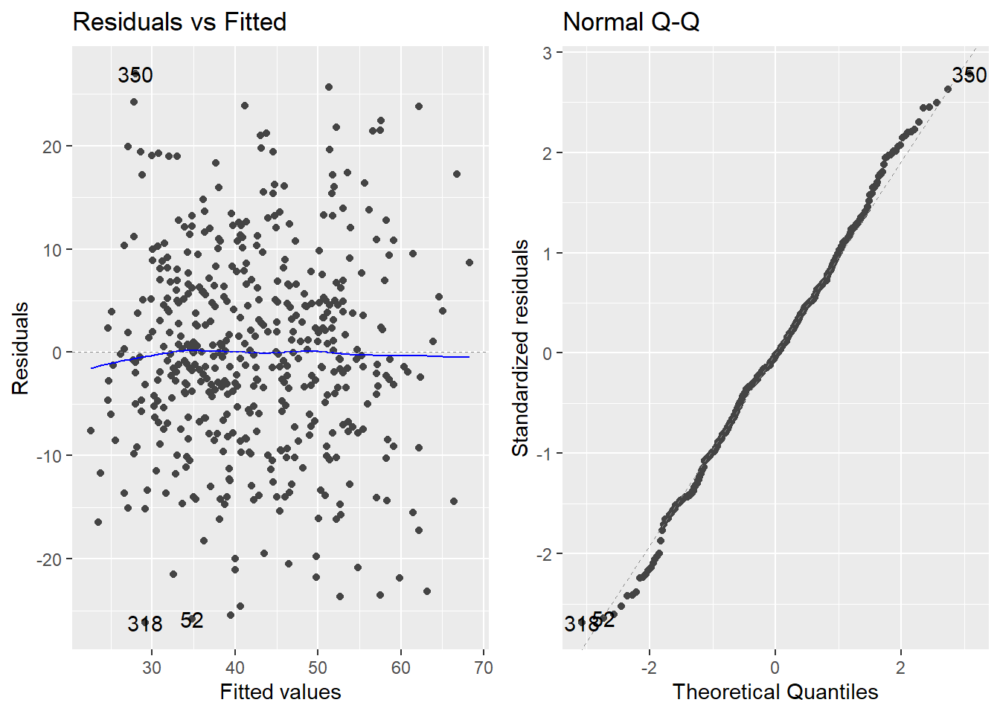
Let’s interpret each graph:
Residuals vs. fitted plot (plot 1, upper left corner): You see a scatterplot with a blue line (LOESS smoothing curve). If the residuals are normally distributed around zero, then the blue line will be horizontal (parallel to the zero line).
Q-Q plot (plot 2, upper right plot): The Q-Q plot shows you whether or not the residuals are normally distributed. On the X-axis you can see the quantiles of a normal distribution, while on the Y-axis you can see the standardized residuals (residuals dived by their standard deviation). If the residuals are normally distributed, in general, most of the points need to lie on the diagonal.
QUESTION: Are residuals normally distributed, based on these plots?
Task: Build an histogram with the residuals of the hyper_hospd_adj_lm model.
Click to read a hint
To do an histogram of the residuals you can follow a similar approach than the one we used in the step 6.3. That is, first adding to the tbe dataframe the residuals as a column (you can use the function resid()) and then using ggplot() to plot this column in the x-axis of a geom_histogram()
Click to see a solution (try it yourself first!)
# First add a variable with the residual values to the dataframe
data_res <- tbe %>%
filter(!is.na(hospd)) %>% # Remove NAs
mutate(res = resid(hyper_hospd_adj_lm)) # Create a new variable with the residual values
### You can now open data_res to have a look at the new column
# Now we do the histogram with the residuals
data_res %>%
ggplot(mapping = aes(x = res)) +
geom_histogram(aes(y = ..density..)) + # Adding a histogram with density
#the function below will add the normal curve.
stat_function(fun = dnorm, #The fun = argument we are specifying that we want the normal curve
args = list(mean = mean(data_res$res, na.rm = T), #to draw a normal curve we need to give the mean and standard deviation of our column
sd = sd(data_res$res, na.rm = T)),
col = "darkblue", lwd = 1) +
labs(
title = "Histogram of Residuals",
x = "Residuals",
y = "Frequency"
) +
theme_bw() # we add a predefined theme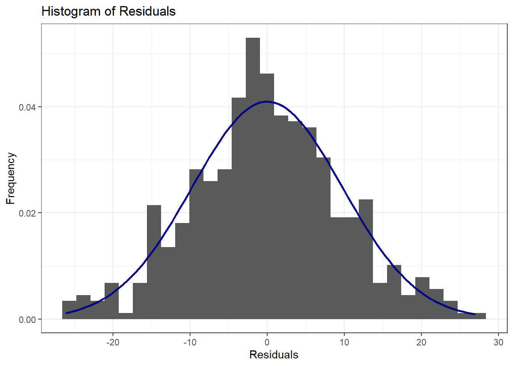
QUESTION: Does the histogram suggest a normal distribution of residuals?
Task: Carry out a Shapiro-Wilk test to ascertain statistically if residuals are normally distributed
Click to read a hint
Review Step 4.1 and/or have a look at the EpiRhandbook Chapter on Simple statistical tests if you still have doubts.
Click to see a solution (try it yourself first!)
data_res %>%
shapiro_test(res)| variable | statistic | p |
|---|---|---|
| res | 0.9960796 | 0.2762974 |
QUESTION: How do you interpret the result of the Shapiro-Wilk test?
Step 7.2: Homoscedasticity
Now we will check the other assumption, that the variance of the residuals (i.e., the magnitude of their distance to 0) does not depend on the predictor.
Check homoscedasticity by running plot number 3 (Scale-location plot) in the autoplot() function.
Click to see a solution (try it yourself first!)
# Generate the scale-location plot
autoplot(hyper_hospd_adj_lm, which = 3)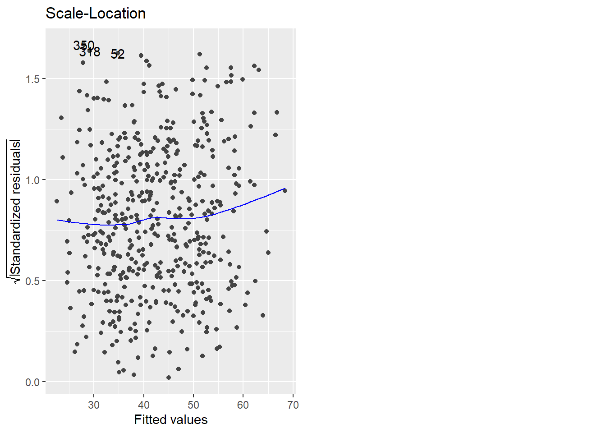
This plot is called a scale-location plot and represents the fitted values vs. the square root of the standardized residuals. With this plot it is possible to check for heteroscedasticity (i.e., heterogeneity of variance - the opposite of homoscedasticity). Ideally, the residuals should be evenly spread out across all levels of fitted values. This means there should be no clear pattern or systematic change in the spread of residuals as you move along the x-axis. If the residuals form a funnel shape (narrow at one end and wide at the other), this indicates heteroscedasticity, meaning the variance of the residuals is not constant. The blue smoothed line should be roughly horizontal and close to zero. Significant deviations from this line can indicate issues with homoscedasticity.
QUESTION: Based on this graph, do you think that the assumption of homoscedasticity is reasonably met?
Step 8: Public health relevance
- Discuss the PH relevance of your findings and any next steps and recommendations that may result from this.
Click to see a solution (try it yourself first!)
This is the first time that an association between hypertension and severity of TBE (based on the duration of hospitalisation) has been detected. Even though you suspected such an association in the beginning (and thus tested for it) and even though you think that it may be causal based on your DAGs and the control for confounding, there are more steps involved in establishing a causal relationship. We should follow the Bradford Hill Criteria to argue causality. For example, the biological basis for this effect needs to be established. Similar effects have been seen for other infections (e.g., SARS-CoV-2), which may have promoted the hypothesis in the beginning. You may also decide to look for a possible dose-response relationship in further analysis of our data. Furthermore, these results should be repeated independently to rule out a chance finding. Once the causal relationship between hypertension and TBE is further corroborated, vaccination against TBE for persons with hypertension could be recommended.